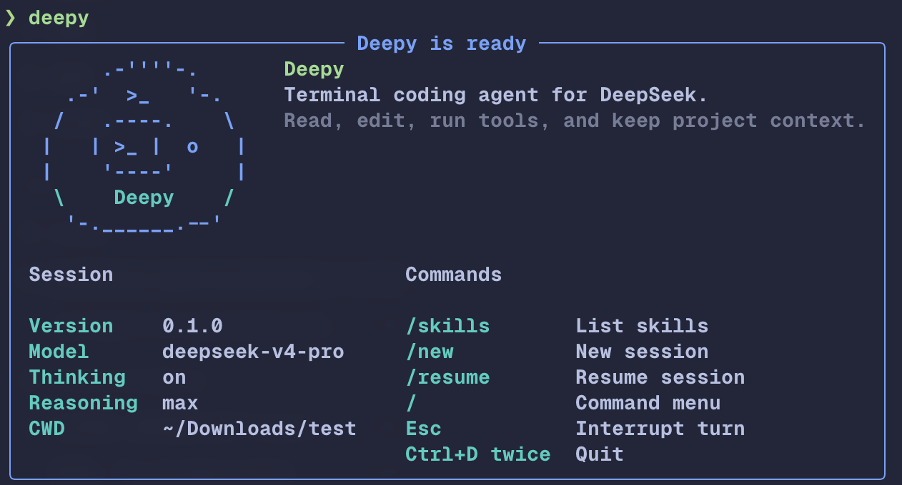
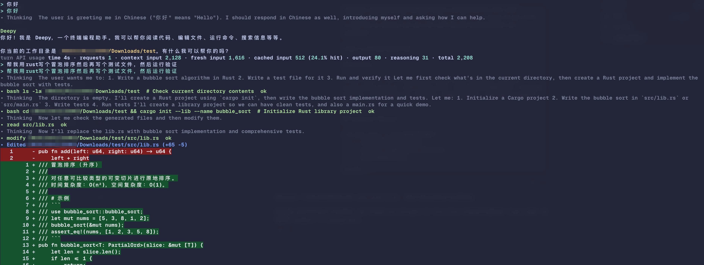
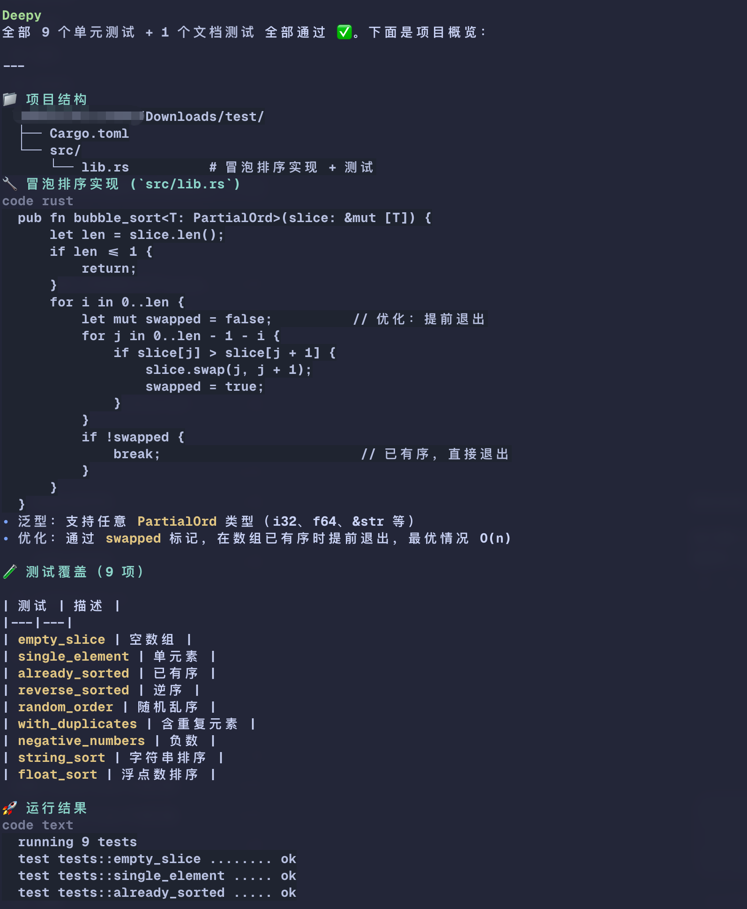
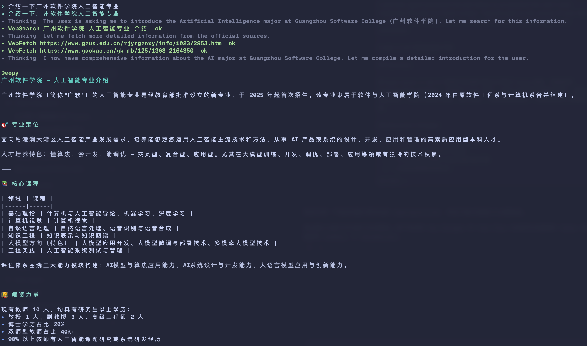

> deepy
A cute terminal coding agent for DeepSeek.
Ask, edit, run tools, search or fetch web pages, and keep project context in one terminal session.

Built for DeepSeek coding sessions
Deepy is a Python CLI that uses DeepSeek through the OpenAI Agents SDK. It is tuned for thinking mode, long context, cache-friendly prompts, and a terminal interface that makes agent work visible.
A terminal-first workflow
Deepy keeps the conversation, tool calls, code changes, and verification output together.
> build
Write code and verify it
Ask Deepy to implement a feature, create tests, run the project command, and summarize the result. Diffs are rendered in the terminal so the change stays easy to review.

> explain
Turn work into clear summaries
Deepy can organize command output and project files into readable Markdown, including project structure, implementation details, and test coverage.

> research
Search and fetch sources
WebSearch finds current information. WebFetch reads a specific URL when the task needs exact page content and source-grounded answers.

Install
Use PyPI after the first release, or install the latest GitHub version now.
uv tool install deepyuv tool install git+https://github.com/kirineko/deepy.gitdeepy config setup
cd your-project
deepy